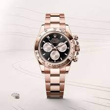

The Rolex Cosmograph Daytona is one of the most iconic and sought-after luxury timepieces in the world. It is a mechanical chronograph wristwatch specifically designed to meet the needs of professional racing drivers, blending high-performance functionality with an elegant and sporty aesthetic.
 The Daytona's story is inextricably linked to the world of motorsports. Rolex became the official timekeeper of the Daytona International Speedway in 1962, a partnership that cemented the brand's connection to racing. The following year, Rolex launched the first "Cosmograph," reference 6239, which would later be nicknamed "Daytona" and have the name officially added to the dial.